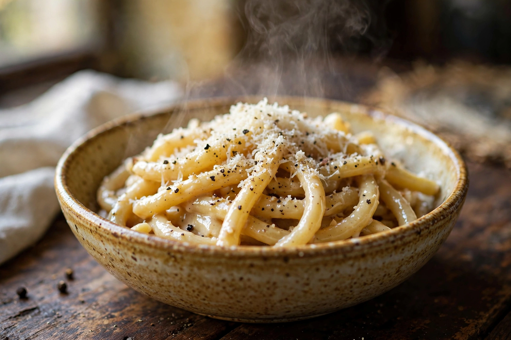
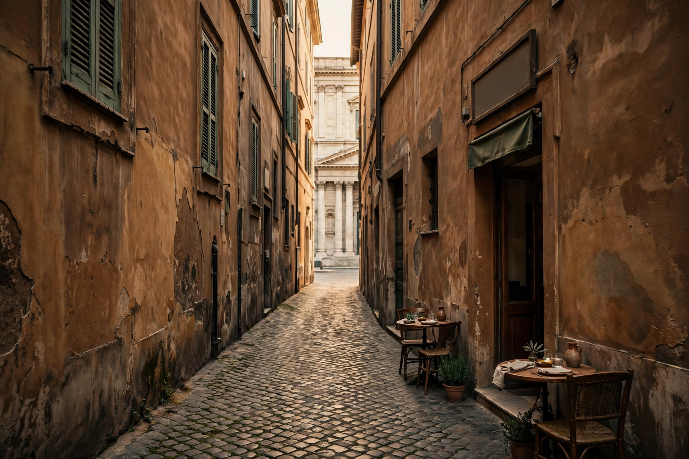
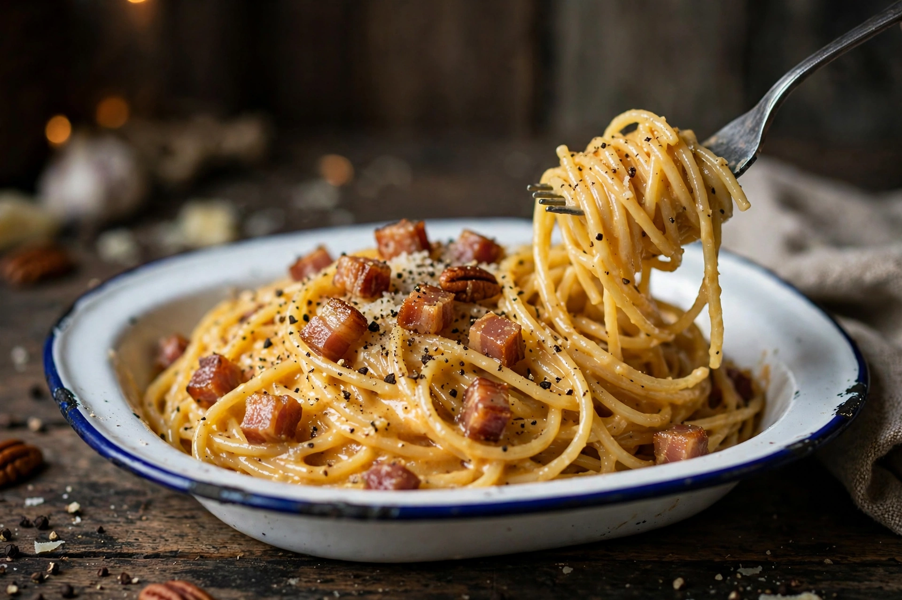
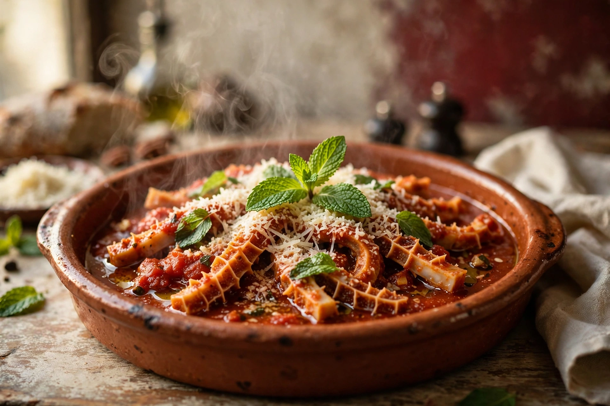
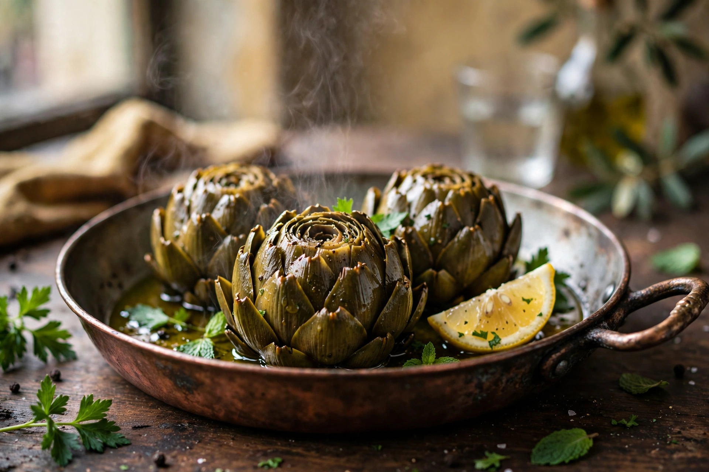
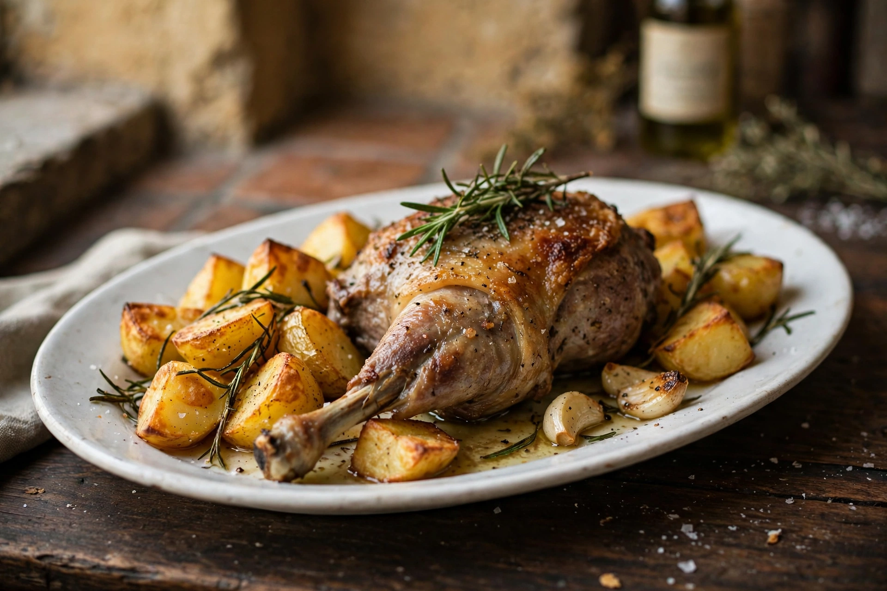
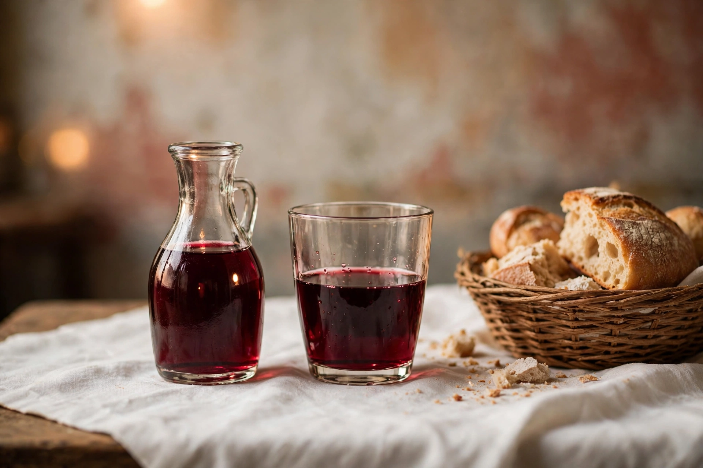

Tonnarelli cacio e pepe
Pecorino romano e pepe nero sui tonnarelli: la prova del nove di ogni trattoria romana: qui la superano da sempre.
Roma · Vicolo Rosini 4, dal 1963
Una trattoria storica nel cuore della Capitale, a pochi passi da Montecitorio: cucina romana con gusto e semplicità, la stessa dal 1963.

Il vicolo verso Montecitorio (immagine d’atmosfera)
1963
La stessa cucina romana, da allora
Famiglia
Conduzione familiare, sala piccola
Senza glutine
Opzioni senza glutine, primi e secondi
Su prenotazione
I posti sono pochi: meglio telefonare
Pochi piatti, quelli romani, fatti come si sono sempre fatti. Scorri il banco: sono i piatti che gli ospiti nominano da sessant’anni.

Pecorino romano e pepe nero sui tonnarelli: la prova del nove di ogni trattoria romana: qui la superano da sempre.

Guanciale, uovo, pecorino e pepe. Niente panna, niente variazioni: la carbonara come la si fa a Roma.

Nel sugo di pomodoro, con la menta e il pecorino: il quinto quarto, cucinato con pazienza.

Crudi e cotti, secondo la stagione e il mercato: a Roma il carciofo non è un contorno, è un’istituzione.

L’abbacchio delle feste romane, con le patate al rosmarino: uno dei secondi che gli ospiti ricordano.
Scorri per vedere i piatti
Nel 1963, in un vicolo di pochi metri dietro via del Corso, apre una trattoria che prende il nome dal Palazzo che ha di fronte: Montecitorio. Da allora la famiglia che l’ha aperta continua a cucinare la Roma di sempre, a pranzo e a cena, per chi lavora intorno al Parlamento e per chi arriva da lontano in cerca della città vera.
La sala è piccola, sotto una volta dipinta, con le pareti colorate e i tavoli vicini: non aspettatevi un locale elegante o di tendenza, ma un’osteria autentica, dove il tempo sembra fermo e le porzioni sono quelle generose di una volta.
Si mangia dentro o fuori, nei tavolini sul vicolo, con il vino della casa nel quartino. I posti sono pochi e la sala si riempie in fretta: la casa consiglia di prenotare, e la prenotazione passa dal telefono, come nel 1963.

Molti primi e secondi anche in versione senza glutine: gli ospiti celiaci raccontano proposte varie e attenzione vera. Ditelo quando prenotate.
Carciofi, puntarelle e le paste al pecorino sono piatti di casa: la scheda del locale segnala opzioni vegetariane.
La sala sotto la volta dipinta, oppure i tavoli nel vicolo, all’ombra: il vicolo è una stradina tranquilla del centro.
La scheda del locale indica l’accesso in sedia a rotelle. Per esigenze particolari, una telefonata prima di venire è la cosa più semplice.
Indirizzo
Vicolo Rosini 4
00186 Roma RM
Tra il Pantheon e via del Corso, a pochi passi da Palazzo Montecitorio.
Prenotazioni: solo per telefono
La sala si riempie in fretta, soprattutto a pranzo: prenotate in anticipo.
Orari: le sedute
| Lunedì | Chiuso |
|---|---|
| Martedì - Domenica | 12:30 - 15:00 18:30 - 23:00 |
Orari secondo la scheda TripAdvisor del locale. Altri elenchi riportano giorni e orari diversi (domenica chiusa, cena dalle 20:00): per essere sicuri, confermate per telefono.